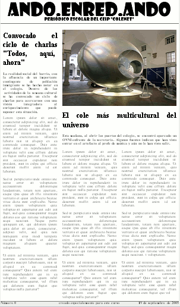

Estilos>>Técnicas

Una opción cuando se crea un periódico es hacerlo de forma que el texto se presente en columnas, de forma similar a la apariencia de un periódico en papel. Hasta que no se habilite un soporte para columnas en futuras especificaciones no disponemos de la posibilidad directa de hacerlo con etiquetas HTML o reglas CSS por lo que el procedimiento será bastante artesanal y tendremos que equilibrar manualmente las columnas.
Aprovecharemos el ejemplo que se muestra, con una primera página de un periódico escolar, para ver cómo se puede crear una estructura con una cabecera, tres columnas y un pie.
La primera opción que tomaremos será si nuestra página ocupará el ancho de la pantalla o bien le adjudicaremos una anchura fija. En el ejemplo hemos optado por fijar el ancho tomando como referencia la cabecera que ya habíamos creado en una práctica anterior.
Dado que es previsible que queden amplios huecos a los lados empezaremos por crear una regla para que el fondo de la página tenga un color gris claro que sirva para delimitar la página.
body
{ background-color: rgb(238, 238, 238);}
Crearemos un contenedor general que será el que incluya todos los elementos de la página y le adjudicaremos un tamaño.
Lo separamos ligeramente del borde superior e inferior y le adjudicamos un margen izquierdo y derecho automáticos para que quede centrado en la página. Importante: recuerda que el margen automático no sirve para centrar en Internet Explorer si no se aplica un parche. La alternativa es crear un primer contenedor con el texto centrado y, dentro de él, el contenedor real. En el ejemplo, como en toda la documentación utilizamos el parche de Dean Edwards.Marcamos la posición como relativa sin indicar ningún desplazamieto cn el objetivo de que pueda servir como referencia a los fragmentos situados dentro del contenedor
#contenedor { margin: 10px
auto;
padding: 0px;
background-color: rgb(255, 255, 255);
position: relative;
width: 750px;
height: 100%;
min-height: 100%;
text-align: justify;
}Creamos un identificador para el encabezamiento. Su anchura será el 100% del contenedor padre, esto es los 750px y, como altura utilizamos 100 píxxeles, como resultad de la que va a formarse al sumar los fragmentos de las cabeceras que ya hemos creado previamente más un espacio de 8 píxeles para ampliar ligeramente la distancia entre cabecera y texto.
Como ves hay una corrección para Internet Explorer. El motivo es que vamos a juntar la cabecera y la subcabecera desplazando ésta hacia arriba, pero si no indicamos que queremos ocultar el espacio sobrante Internet Explorer calculará la altura total del contenedor teniendo en cuenta la altura de los dos elementos más sus márgenes, sin tener en cuenta el desplazamiento hacia arriba de la subcabecera.
Añadimos también un borde inferior para separar visualmente el encabezamiento del resto del documento.
#encabezamiento {
border-bottom: thin solid gray;
width: 750px;
height: 100px;
overflow: hidden; /* Corrección necesaria para Internet
Explorer */
}Rellenamos el encabezamiento con la cabecera y subcabecera que habíamos creado previamente. El código es prácticamente idéntico al que habíamos creado, salvo en que adjudicamos posición relativa a la subcabecera y la desplazamos 20 píxeles hacia arriba para reducir la distancia respecto a la cabecera principal. (Este desplazamiento es el que ha hecho necesario introducir la corrección que hemos mencionado en el paso anterior)
#cabecera { margin: 0pt
auto;
background-image: url(imagenes/andoenredando.png);
background-repeat: no-repeat;
background-position: 0px 10px;
width: 685px;
height: 72px;
}
#subcabecera { background-image: url(imagenes/andoenredando2.png);
background-repeat: no-repeat;
width: 375px;
height: 20px;
position:relative;
top: -20px;
margin-left: auto;
margin-right: auto;
}
span.oculta { position: relative;
left: -5000px;
}
Vamos a crear tres columnas iguales, por lo que su anchura individual será de 250 píxeles que comprenderán el contenido, los rellenos, los márgenes y los bordes si los hubiera.
Aunque los identificadores han recibido los nombres izq,
cent y der
habrían sido innecesarios en este caso al ser las tres
iguales. Si hubieran compartido algunas características pero
su anchura hubiese sido diferente habríamos tenido que
especificarla de forma individual para cada uno.
Observa que, al haber dejado un relleno de 10
píxeles el ancho del contenido queda en 230, de forma que
10+230+10 sumen los 250 píxeles totales de los que
disponemos para esta columna. Si hubiéramos especificado
márgenes o bordes habría que haberlos tenido en
cuenta para detraer su anchura del valor de width
que se refiere, únicamente, al contenido de la caja
#izq, #cent, #der {
padding: 10px;
float: left;
width: 230px;
}
Hemos procedido a rellenar las columnas de izquierda a derecha.
Para incluir la foto del segundo titular (a "doble columna") se ha creado un nuevo contenedor que se ha situado inmediatemente detrás del que hace de columna izquierda.
#fotoprincipal
{ padding: 10px 10px 0px;
width: 480px;
float: left;
} Podríamos haberlo situado en cualquier otro punto de la página y haberlo posicionado de forma absoluta, pero teniendo en cuenta los factores de accesibilidad es preferible hacerlo en el flujo lógico de la página. Para que puedas comprobar el efecto tienes a continuación una miniatura de la página con los estilos aplicados. También puedes hacer que se abra en una nueva ventana otra miniatura sin los estilos para comprobar que el orden de lectura mantiene la secuencia lógica.
A los titulares se les ha aplicado una cabecera h2
lo cual parece coherente con su sentido dentro de la estructura del
documento. Como el título h1
lo habíamos aplicado al nmbre del periódico y es
posible que la h2 quedara un poco
pequeña se ha creado una clase
para especificar la apariencia visual.
En el caso de las entradillas podría haberse
recurrido a un título de menor nivel (un h4
por ejemplo) pero en este caso sí que se trataría
de una mala utilización del etiquetado, puesto que el
objetivo es conseguir una modificación de la apariencia
visual por lo que, simplemente se ha optado por crear una clase.
Para el ejemplo se ha utilizado la extensión Lorem
Ipsum para generar un bloque de texto que rellenara el
espacio.
Por último se ha creado un contenedor para el pie. Su colocación en el fluj es después de la última columna, pero como no sabemos si esta será más corta que alguna de las precedentes incluimos una regla para que se impida la flotación de otros elementos en ambos lados y de esta forma garantizamos que siempte se colocará debajo de la columna más larga.
Hemos puesto una línea divisoria y un color de fondo para separarlo visualmente del resto del texto.
No hemos necesitado indicar la anchura ya que al tratarse de un elemento en bloque que no deja flotar a otros elementos utilizará la totalidad de la anchura del contenedor padre.
Sí es importante poner a cero los márgenes y rellenos para evitar que algún navegador les adjudique valores por defecto diferentes lo cual descompondría la distribución que vamos a hacer a continuación.
#pie { border-top: thin
solid gray;
clear: both;
font-weight: bold;
margin:0;
padding:0;
}Para rellenar el pie se ha optado por crear tres clases que permitan incluir texto en tres zonas del mismo. Al haber especificado las anchuras no necesitamos indicar flotación en la clase fecha porque ocupa exactamente el espacio que queda disponible dentro del contenedor
.numero { float: left;
width: 190px;
}
.centropie { float: left;
text-align: center;
width: 350px;
}
.fecha { width: 200px;
text-align: right;
}